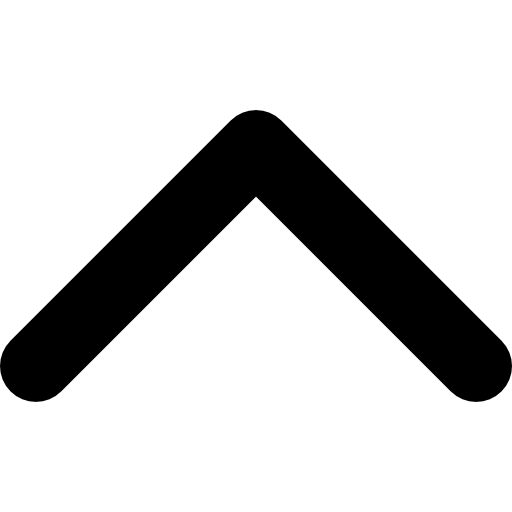
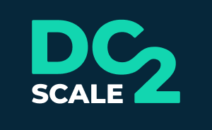
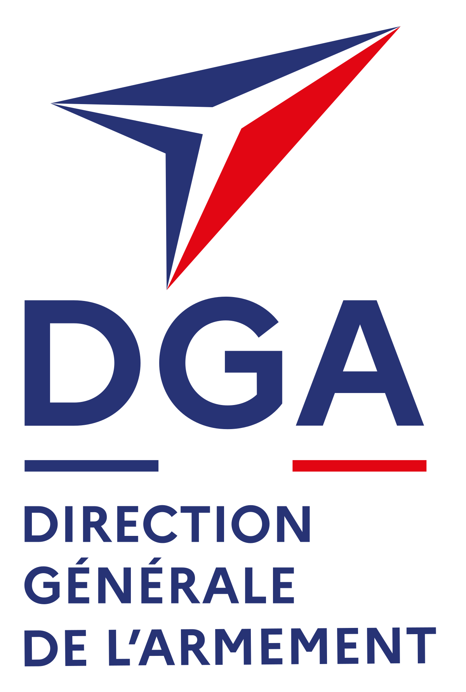
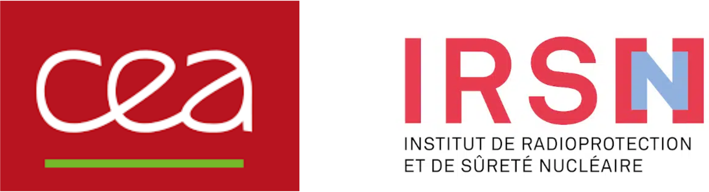
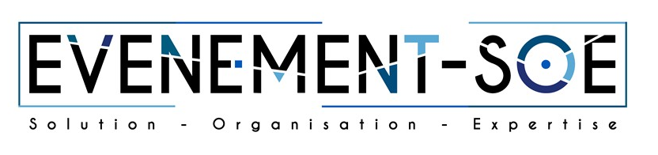
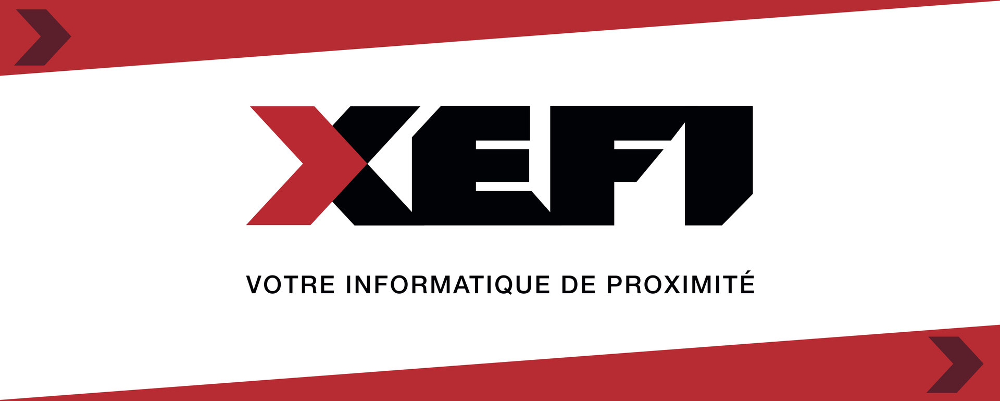
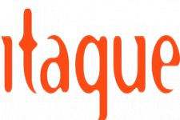

- Expériences Professionnelles :


Stage dans l'entreprise DC2Scale à Vélizy-Villacoublay :
12/11/2024 au 20/12/2024
DC2Scale est une jeune startup française qui conçoit et exploite ses propres datacenters dans une démarche écologique et économique.
Employés : 22
CA : 4M (2024)

Stage à la DGA de Arcueil dans le service informatique S2NA :
27/05/2024 au 05/07/2024
Délégation générale pour l'armement. Responsable de toutes les opérations liées aux acquisitions d'armement.
Employés : 10K
CA : 10MD (2024)

Stage à l'IRSN dans le Service Cybersécurité du CEA :
21/11/2022 au 27/01/2023
L'IRSN exerce son expertise dans la surveillance radiologique de l'environnement en situation d'urgence radiologique et installation nucléaire.
Le CEA est un organisme national consacré à l'énergie nucléaire.
Employés : 21K
CA : 600M (2023)

Stage dans l'entreprise EVENEMENT-SOE à Fresnes :
09/05 au 28/05/2022
Entreprise spécialisée dans l'installation, la configuration et la gestion audiovisuelle et sonore d'événements.
Employés : 4
CA : 100K (2022)

Stage dans l'entreprise XEFI à Antony :
21/03 au 22/04/2022
Entreprise spécialisée dans la maintenance et la configuration d'ordinateurs.
Employés : 4
CA : 150K (2022)
Stage dans l'entreprise EVENEMENT-SOE à Fresnes :
24/05 au 02/07/2021
Entreprise spécialisée dans l'installation, la configuration et la gestion audiovisuelle et sonore d'événements.
Employés : 4
CA : 80K (2021)
Stage d'observation dans l'entreprise Maison Seyssac :
03/02 au 07/02/2020
Entreprise qui gère une boutique de fruits et légumes.
Employés : 3
CA : 40K (2020)

Stage d'observation dans l'entreprise ITAQUE à Nanterre :
15/04 au 19/04/2019
Entreprise spécialisée dans la maintenance informatique.
Employés : 10
CA : 300K (2019)